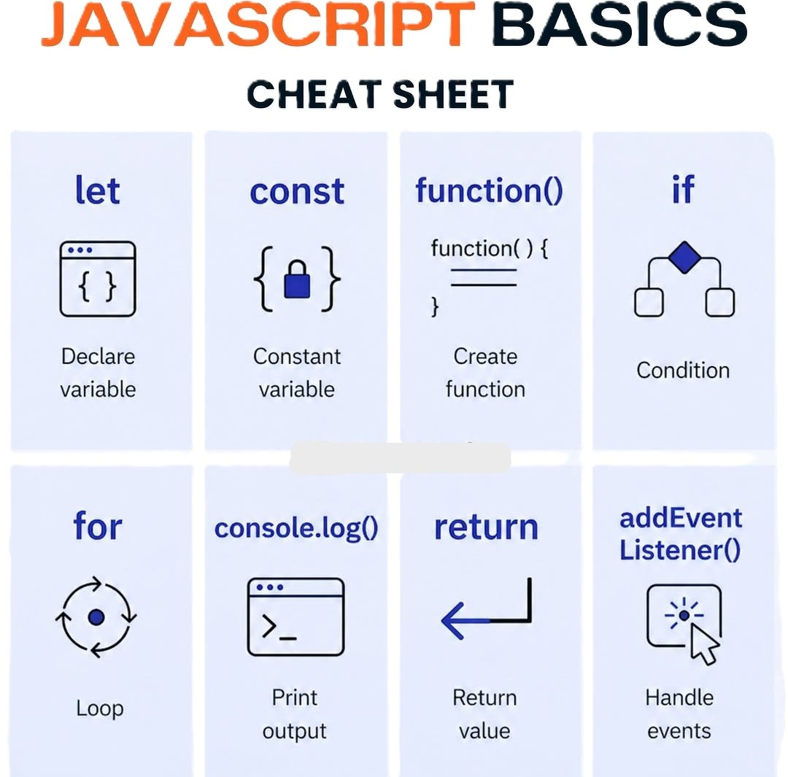

JavaScript es el lenguaje de programación que permite agregar interactividad y dinamismo a las páginas web. Junto con HTML y CSS, forma la triada esencial del desarrollo web, siendo el único lenguaje de programación que los navegadores pueden ejecutar de forma nativa.
JavaScript permite manipular el DOM, responder a eventos del usuario y comunicarse con servidores. Sus conceptos fundamentales son:
var, let o constfunctionif, else y switchfor, while y forEachaddEventListener
Lo que más me parece útil de JavaScript es que con él una página deja de ser estática y cobra vida. Poder responder a clics, validar formularios o actualizar contenido sin recargar la página son cosas que solo JS hace posible. Es un lenguaje muy versátil que se usa tanto en el frontend como en el backend.
JavaScript es indispensable para el desarrollo web moderno. Dominar sus bases permite crear experiencias interactivas y dinámicas, y abre la puerta a frameworks populares como React, Vue y Node.js.